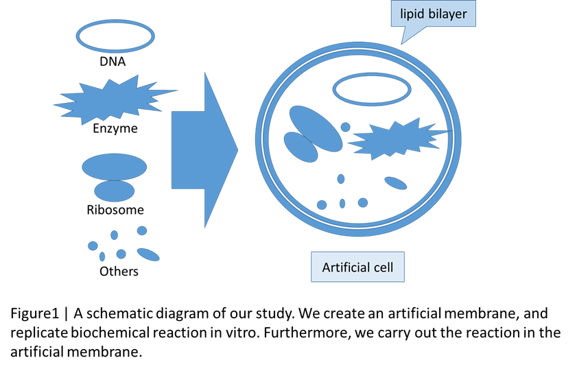

BIOMOD Tsukuba team - artificial cell
Abstract
Owing to the dramatic progress in technologies in the field of synthetic biology,
it became easy to synthesize DNAs and proteins in test tubes. Depending on these developed techniques,
we are thinking if it is possible to create an artificial cell of the simplest compositions,
because cells comprises DNAs and proteins. A cell can be simply divided into two parts,
a membrane structure as the compartment and a chemical mixture in which the biochemical reactions (transcription and translation) occur.
In this study, we adopt a phospholipid bilayer structure as the artificial membrane,
and a cell-free protein synthesis system as the biochemical reactions in the membrane (Figure 1).
The artificial membrane is labeled by fluorescent pigment and observed by a fluorescence microscope.
Transcription and translation are evaluated by activity of synthesized enzymes.
The success of protein synthesis in the membrane structure is considered as the success of the mimicking an artificial cells in early stage.
In the future, we plan to design an environment-responsive artificial cell by introducing gene switch into the artificial cell.
Introduction
Although more than 50 years have passed since the central dogma was advocated and the dramatic progresses in DNA and protein technologies have been made,
we still cannot produce a cell. In the emerging research field of synthetic biology, how to create an artificial cell is becoming a hot topic, since it has been studied from 1990 [1].
...
Materials and methods
・Preparation of vesicles [1]
1. W/O emulsions were prepared by mixing emulsification. Add 2.5ml of hexane solution (3wt% Span 80 and 0.1wt% stearylamine) to 0.5ml of 50mM Tris-HCl (0.01M calcein, pH8.0),
...
Result
・Construction of vesicles
We observed vesicles with a fluorescence microscope (Figure2). These pictures were same ones.
We found some sphere structures in the pictures. They were vesicles which contain some fluorescent dyes.
...
Summary and future work
Firstly, we successfully made the artificial membrane by enclosing the water-soluble substances in vesicles of high efficience.
Scecondly, we successfully produce the enzymatic active proteins in vitro, by using the PURE system.
...